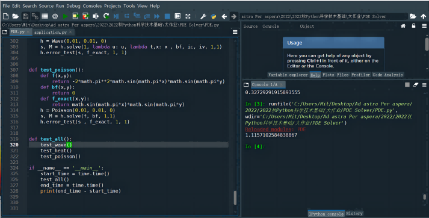
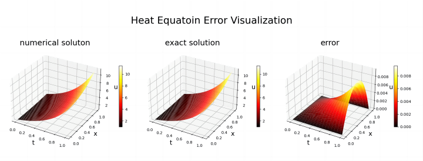
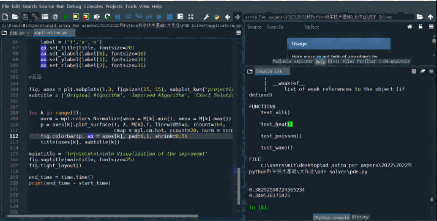
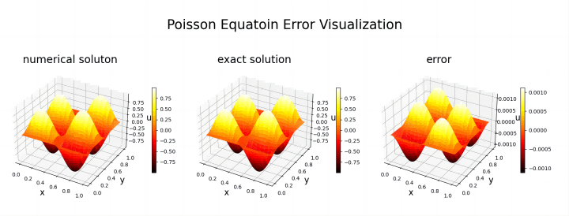
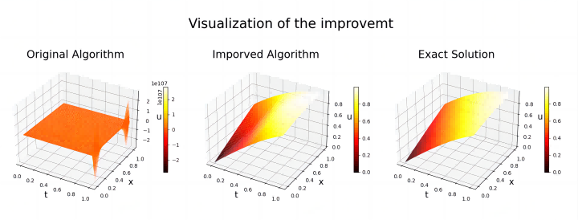

1.1
问题的提出
本学期我学习了机器学习这门课，并对其中涉及的数值分析方法产生了浓厚的兴趣。数值分析主要是为那些不能求出精确解，或者求精确解要消耗
大量时间的问题而服务的。这其中一个典型问题就是偏微分方程（PDE)[1] 的
求解。PDE在数学、物理、工程等领域都有极为广泛的应用，例如著名的爱因斯坦相对论的核心“场方程”就是一个PDE.
然而，PDE的精确求解往往是及其困难的，比常微分方程(ODE)难的多。我去年上过微分方程引论这门课，其中可以求解的PDE是屈指可数。但是我现在上
的课程，如微分几何、复分析等，
常常接触大量PDE，他们起到帮助分析问题的作用，所以不必精确地求解。此时PDE的数值解就能极大地方便其他课程的应用。课程中介绍了ODE的求解方
法，但未涉及PDE. 因此我决定用Python编写程序以实现一些广泛使用的PDE的数值求解与可视化。
1.2
实验目标
本程序求解以下方程的Dirichlet问题[1] ，即提供初值和
边界值
（1）一维波方程：；
（2）一维热方程：；
（3）二维泊松方程：
（2）基本假设：所求解的方程有良好的光滑性，从而可以采用离散逼近的思想[2]
1.3
原理和公式
数值求解PDE的主要方法有有限元法、有限差分法、有限
体积法[2] 。本实
验我选择了有限差分法。其基本内容为：
（2）离散逼近公式：对下标z，设其对应下标i，则
有.
用此公式替换则得到：
1. 热方程：采用《基于Python编写求解抛
物型pde方程的经典数值格式模拟》[3] 的
CN格式：
2.
波方程：基于《Python——一维波动方程求解》[4]，但是将经
典算法用CN方法改良。原始算法为：，
改良后为
3. 泊松方程：基于《有限差分法的泊松方程第一类边界问题求解》[5]，但是将递 推法改为求解线性方程法，并利用稀疏矩阵的特点减小运算量[6] 。 算法为：
以上为每一步的递推式，将其整合为矩阵形式，即可通
过求逆的方法求出解。
（3）计算以上M方阵，绘制可视化图。
（4）插值：对离散方阵插值得到连续的数值解s。
本程序由一个PDE类，3个 子类Heat, Wave, Poisson以及一个主程序application.py组成，此外在程序内自定义了一些异常处理和测试函数，以排除一些不正确的输入并检验正确性。
2.1
PDE类
类的构造方法定义了步长dt
和dx，默认值为0.01，用户可自行修改，同时定义了fig，取值0,1，标识用户是否希望绘制图像。然后类内包含了4个函数
grid，figure_3D，tight, error_test，分别实现初始化网格、画图、为可视图添加坐标和标题、分析
误差的功能。
2.1.1
Heat子类 2.1.2 Wave子类 2.1.3Poisson子类
三个类均各包含两个函
数：init_solution和solve，分别实现按给定类型和条件初始化M、数值求解热方程并作出可视化画图的功能。
2.2 函数test_all
定义在PDE.py中的测试函数。当直接运行PDE.py时，会自动调用此函数。
它会调用函数test_heat, test_wave,
test_poisson，将已知答案的方程和数值解对比，并输出数值解图、准确解图和错误率图象。
2.3
主程序application
应用PDE类具体求解两个
PDE方程。第一个方程来源为网站“Poisson Equation”[7]的
例 20.8，第二个方程为我自己举的例子。
（1）算法上， 热方程算法参考《基于Python编写求解
抛物型pde方程的经典数值格式模拟》的CN算法，其优点是收敛稳定，不会受系数影响。波方程算法利用CN算法改良了原始递推算法，根据《Python
——一维波动方程求解》，原始算法的收敛性与系数c，dt,
dx的表达式有关。我使用改良CN算法，求解方程更加稳定，在第4部分我会给出一个实例，表明存在波方程使用原始算法收敛，但使用改良算法拟合良好。泊松
方程算法基于《有限差分法的泊松方程第一类边界问题求解》，但我将问题转化为稀疏矩阵求逆问题，更快更稳定。最后，我拓展了一些非标准的
PDE，例如在波方程标准型上添加项， 在热方程中添加
（2）程序上，除了绘图与拟合连续值均由
本人独立写成。同时编写了解的可视化化、误差分析等功能。此外，如果用户输入的相交的定义域上函数值不相等（从而
边界条件不连续）都会报错，提高健壮性。
在调用PDE类后，使用help(PDE)即可看到完整的使用方法。用户先选择inr_x和inr_t（对应x,t的间隔）和想求解的方程
类型，用于初始化计算模块h。然后输入参数，s
（1）热方程 s = h.solve(c, f, g, bf, ic, max_t, max_x)，c表示方程中的常系数，f是方程中
u 的函数，g是 t,x 的函数， bf 是边界条件， ic 是初值， max_t和 max_x 是
t 和 x 的最大值（需大于0）
（2）波方程 s = h.solve(c, f, g, bf, ic, iv, max_t,
max_x)，c表示方程中的正常系数的平方根，f是方程中 u 的函数，g是 t,x 的函数， bf 是边界条件， ic 是初值，
iv 是初始速度，max_t和 max_x 是 t 和 x 的最大值（需大于0）
（3）泊松方程s = h.solve(f, bf, max_t, max_x)，f是方程的源函数， bf
是边界条件，max_t和 max_x 是 t 和 x 的最大值（需大于0）
直接运行PDE.py可以得到三种方程的验证图，耗时为1.1秒，如果不加f和g项，则三个函数的绝对误差量级为1e-6, 1e-4,
1e-5。test里面的给定方程均考虑了f和g项，因此对逼近结果有代表意义，在这种情况下，绝对误差数量级为1e-3，1e-2,
1e-5，相对误差为1e-4, 1e-3, 1e-4. 结果如下图（为节约空间，图像经过压缩有些模糊）：

程序application.py的运行结果：



 上图是求解泊松方程部分的输出结果，耗时
0.38秒，速度相当快。可见错误率数量级在1e-4左右，拟合效果较好。
上图是求解泊松方程部分的输出结果，耗时
0.38秒，速度相当快。可见错误率数量级在1e-4左右，拟合效果较好。通过本课程的学习，我学会了Python基本语法，了解了numpy,
scipy等功能丰富的库，并认识到python在科学计算中的重要作用。在完成大作业的过程中，我尝试自己提出实际问题，然后通过python编程解决
问题，这既锻炼了我的代码能力，又帮助我学会进行学科之间的融合。总而言之，上了这门课，我感觉收获很大。
在完成大作业时，我也遇到不少困难，但最终都能尽力化解。查阅文献是我遇到的第一个困难，一开始我在中文网站上搜索，得到的结果很有限。后来
我尝试去国际网站上查阅文献，获得了一些很不错的信息。其次，在编写程序时，因为逻辑错误或者我自己推导的算法本身的错误，常常出现一堆
bug，后来我尝试重新一步步推导公式，并仔细阅读scipy和numpy等库的使用教程，最终解决了这些问题。
在此过程中，我充分认识到python功能的强大和齐全。我逐渐发觉，利用python进行编程时，应首先查询是否有已有的函数能直接实现我
想要的功能，这不仅节约时间，而且具有更好的时间和稳定性能。同时，此课程能帮助像我一样的理学院学生锻炼写代码的能力，因此这门课程是相等
重要的，祝本课程越来越好！
课程建议：教材中部分程序比较长，或者是几个功能合并到一个程序中，就导致算法解释和程序隔得比较远，建议适当采用程序内注释的方法
[1]陈祖墀. 偏微分方程(第三版)[M]. 北京：
高等教育出版社，2003.
[2][印]Mehta. Python科学计算基础教程[M]. 陶俊杰，陈小莉. 北京：人民邮电出版社，2016.
[3]知乎文章《基于Python
编写求解抛物型pde方程的经典数值格式模拟》, https://zhuanlan.zhihu.com/p/409935825
[4]CSDN文章《Python——一维波动方程求解》，https://blog.csdn.net/Thattear/article
/details/125576991
[5]杜书德. 基于有限差分法的泊松方程第一类边值问题求解[J]. 科技通报, 2018, 34(4) ：21-24.
[6]Scipy教程“Sparse linear algebra”,
https://docs.scipy.org/doc/scipy/reference/sparse.linalg.html
[7]网站“Poisson Equation",
https://www.sciencedirect.com/topics/mathematics/poisson-equation
打算讲解的日期：12月22日，12月29日